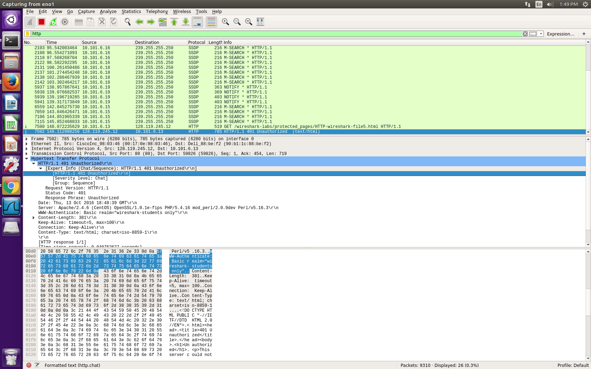
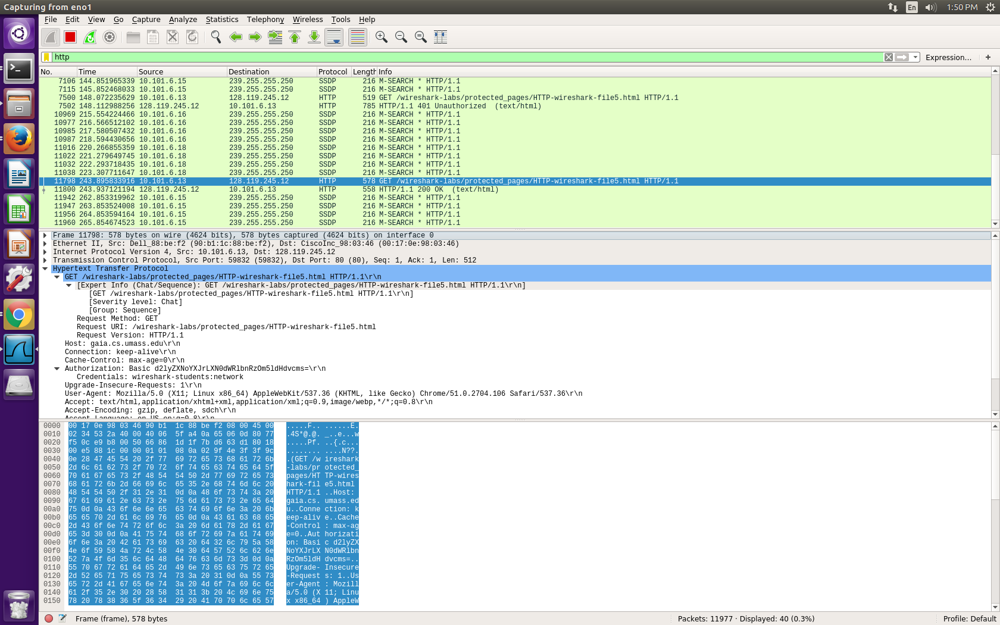
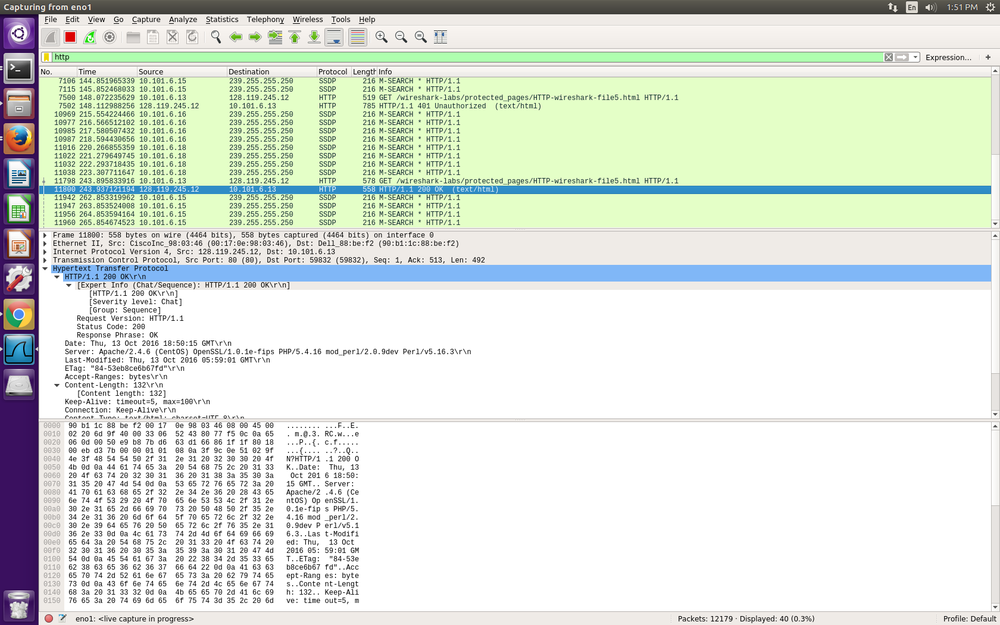

Wireshark
I have completed the lab on HTTP and worked a little on TCP. Here is the link to
my lab.
One of the exercise that was about authorization. In order to do this lab you will need to know a little bit of how Wireshark works and know what HTTP is. If you need help on Wireshark or need a refresher,
read this pdf. Or if you would like to read about HTTP before starting Wireshark, here is a
Wikipedia article about HTTP. Now when we talk about authorization. Authorization in computer science is a way to have only certain people have access to something, like bank account, amazon account, or school email. In order to get an authorization you need credentials. Credentials is usally a username and password. We will look at how HTTP deals with authorization.
If you type http://gaia.cs.umass.edu/wireshark-labs/protected_pages/HTTP-wireshark-file5.html into the url, it will take you to another screen, and a pop up will appear asking for you username and password. Meanwhile on Wireshark, the client sent a GET HTTP and the server responded with a 401 Unauthorized.

401 Unauthorizated means that we did not have the right authentication/credential. However, if we type in the correct username and password (in this case, username is "wireshark-students" and password is "network"), then the client sends another GET HTTP, except with a new field called Authorization with the credentials.

Since you have the correct authorization, you gain access to the web page which give you the contect and we have a 200 OK instead 401 Unauthorized.

Lab